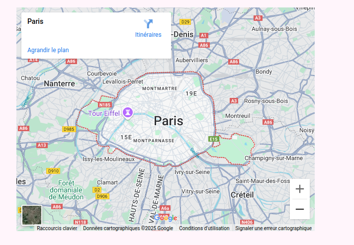

Pariscap
Outils utilisés:
PHPStrom
Framagit
Filezilla
Framagit
Filezilla
Technologies utilisées:
PHP
Git
Git
Contexte:
Projet réalisé au cours de ma deuxième année de BTS
Le projet vise à créer un site web pour une office de tourisme qui fait visiter Paris. Il regroupe ainsi certains lieux iconiques de Paris et les évenements qui peuvent s'y dérouler.
Le but de ce projet a été de retravailler PHP afin de se remettre dans le développement après les vacances.
Le projet vise à créer un site web pour une office de tourisme qui fait visiter Paris. Il regroupe ainsi certains lieux iconiques de Paris et les évenements qui peuvent s'y dérouler.
Le but de ce projet a été de retravailler PHP afin de se remettre dans le développement après les vacances.
Déroulé du projet:
Le projet a été réalisé avec l'outil git afin de pouvoir chacun travailler sur une fonctionnalité différente, et de partager le code entre les membres.Nous avons pu retravailler l'utilisation de PHP, et notamment la connection à une base de données en PHP natif.
Chaque personne travaillait sur une branche différente, et on se retrouvait pour fusionner ces branches.
Ce projet présente des dépendances, notamment l'API de google map qui permet l'integration d'une carte de la ville de Paris:

Ce projet a donné lieu à un déploiement sur la ferme de serveurs du lycée, nous avons utilisé filezilla pour transférer les fichiers sur l'emplacement du serveur qui nous était réservé.
Nous avons aussi eu l'occasion de présenter ce projet aux élèves de première année pour leur faire découvrir ce que la formation pouvait nous apprendre.